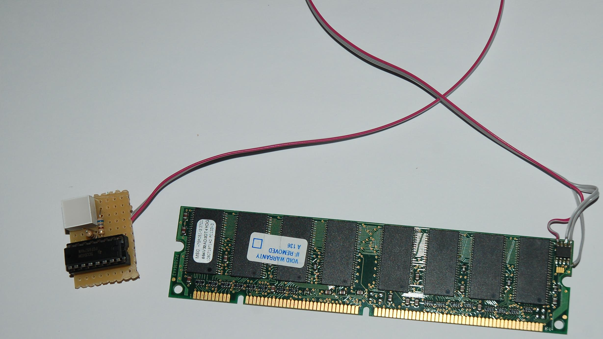

Hier ein Bild vom gesamten Aufbau:

Meine Lösung hier geht direkt an das RAM-Modul und funktioniert mit 3,3V. Ich hole mit den LEDs und dem PCF8574 ca 50mA aus dem Board. Braucht man mehr Strom oder 5V, sollte man die Spannung am Netzteil abgreifen.
Dabei muss man jedoch darauf achten, dass dann auch 5V auf den Busleitungen liegen. Das kann nicht jedes Board ab. Oft reichen Angstwiderstände zum Schutz in der Leitung. Ein richtiger 5V<->3.3V Pegelwandler wäre jedoch besser.
Auf dem RAM-Modul befindet sich ein 24xx EEPROM, oft ein 24LC02. In jedem Fall sollte das entsprechende Datenblatt angesehen werden um die Pins zu identifizieren.
Es geht dabei um GND, SDA und SCL.
PCF8574 Portexpander
Dieser Chip stellt 8 Ein-/Ausgabeleitungen zur Verfügung. In meinem Fall habe ich einen PCF8574A verwendet. Dieser unterscheidet sich lediglich in seiner Adresse zum 8574 ohne A. Durch die drei Addresspins lassen sich 8 Adressen einstellen. Nimmt man also von beiden Varianten 8 Stück, bekommt man 128 IO-Leitungen an einen I²C-Bus.
Mehr dazu im Datenblatt, oder hier auf Deutsch http://www.mikrocontroller.net/articles/Port-Expander_PCF8574.